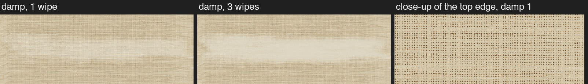
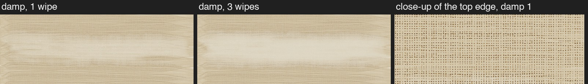
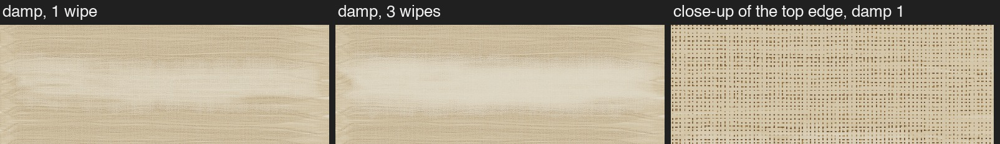

Dry rule: version 4. Damp rag: B (mild). Edges: the light-pressed rim from round 3. The wash sat 10 minutes before wiping. Every picture shows the paint after it has finished flowing and dried.



All three look nearly the same. The paint barely runs, even at 30 times the speed: the engine's flow is held back by how it steps through time (it moves paint only once per whole minute, with a cap on its steps), and the spirits evaporate within a couple of minutes. That's the thinner's known problem (handover 6.2), not the rag's.